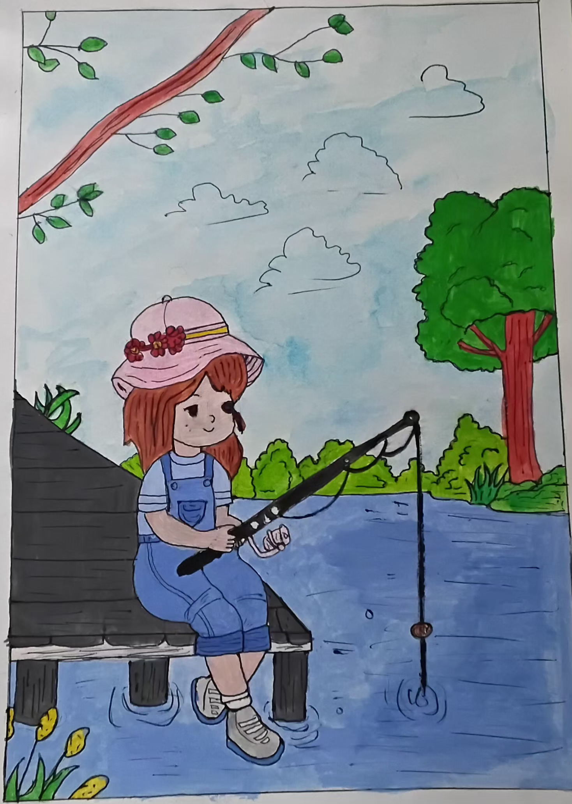
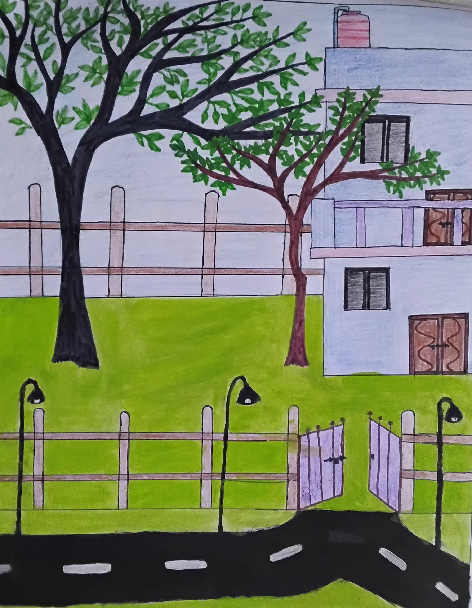
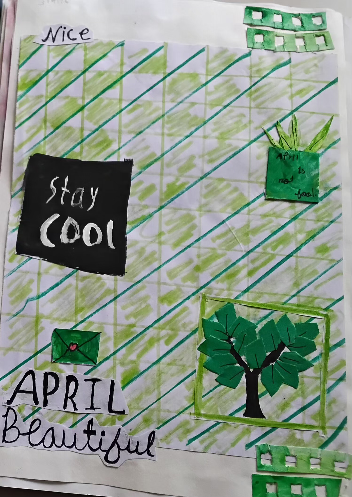
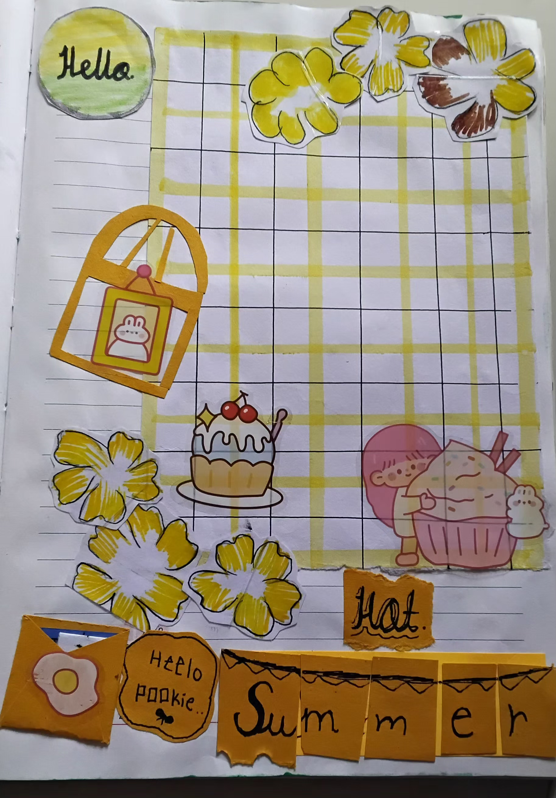
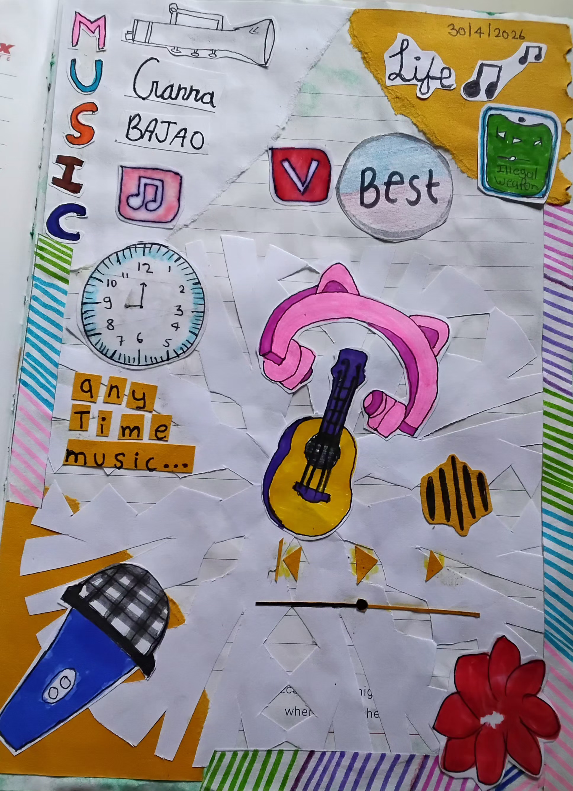
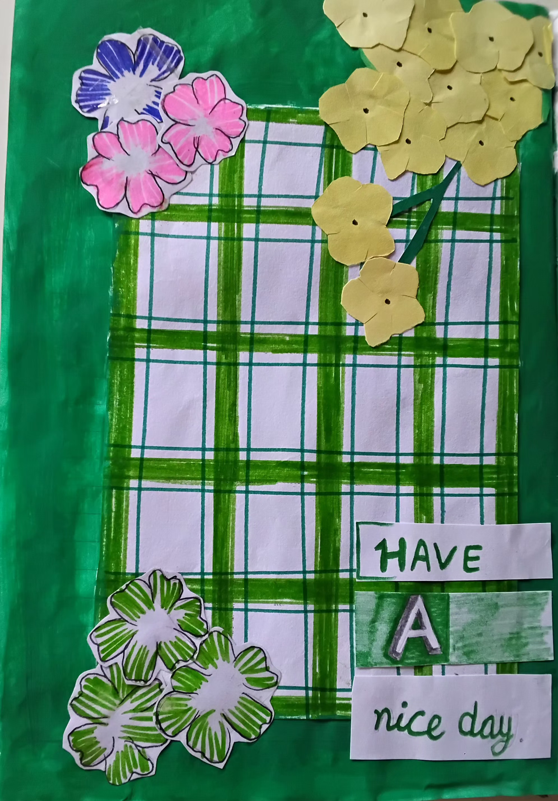

A Peaceful Fishing Day
A quiet scene by the water, showing a peaceful afternoon surrounded by trees and nature.
DRAW • WRITE • CREATE
Explore drawings, journaling ideas, creative prompts and peaceful moments on paper.
Explore the galleryDRAWINGS
Explore original drawings created with paper, pencil and imagination.

A quiet scene by the water, showing a peaceful afternoon surrounded by trees and nature.

A simple neighborhood scene with trees, a green garden, a house, a road, a fence and an open gate.
JOURNALING
Explore handmade journal pages filled with colours, ideas and little everyday details.

A cheerful April-themed journal page filled with greenery, handmade details and a little reminder to stay cool.

A bright summer journal page combining flowers, sweets, handmade notes and playful details.

A creative music-themed page made with handmade paper elements, musical objects and colourful details.

A cheerful floral journal page built around green tones, handmade flowers and a positive message.
Three things I noticed today, one thing I learned, and one tiny moment I want to remember.
Draw your mood as a landscape, then write five sentences about the scene.
Combine a photo, a small sketch, a date and a few honest lines.
ABOUT
Welcome to Paper & Pencil, a small creative space where I share my drawings, journal pages and creative ideas. Art and journaling are hobbies that allow me to explore my imagination and turn simple thoughts into something beautiful.
I believe happiness can often be found in small, beautiful things around us—a peaceful moment, a little idea, a page in a journal, or something we create with our own hands. This space is my way of enjoying those little moments and expressing them through art.
Here, you can explore my original artwork, discover journaling ideas and find a little inspiration for your own creative journey.